AI és a munkaerőpiac: mit mondanak az adatok?
Koren Miklós
2026
Magamról
- Közgazdász, Central European University
- Kutatás: nemzetközi kereskedelem, gazdasági komplexitás, AI közgazdaságtana
- Koren, Békés, Hinz & Lohmann (2026). Vibe Coding Kills Open Source
- Bárány & Koren (2026). Broken Ladders: AI, Teamwork, and Skill Formation
- Koren, Bárány & Wohak (2026). The Directions of Technical Change
AI közgazdaságtana
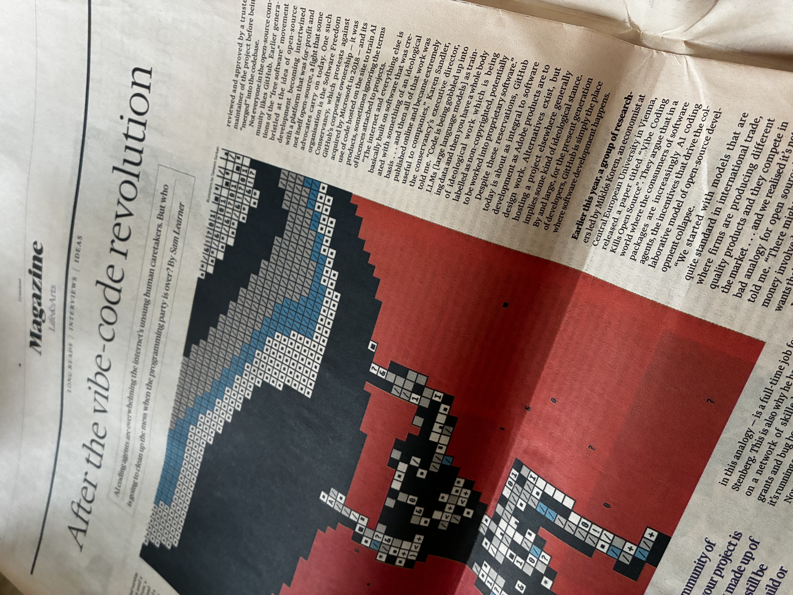
AI közgazdaságtana
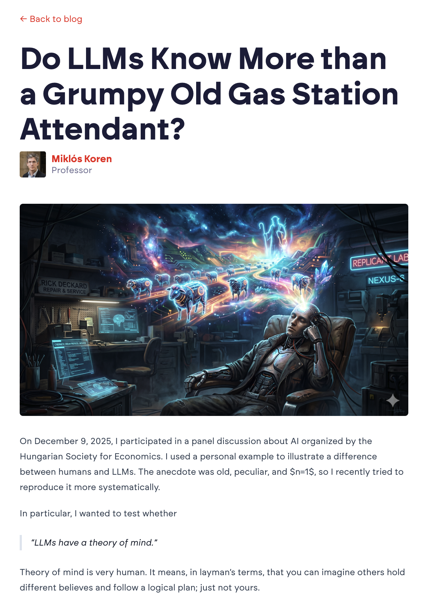
AI oktatás
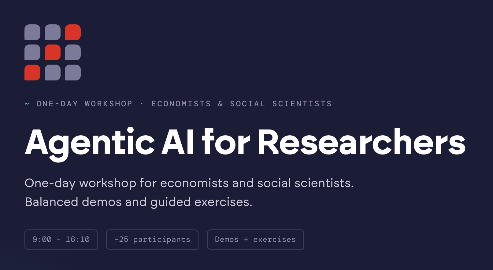
AI-alkalmazások fejlesztése: Dodo
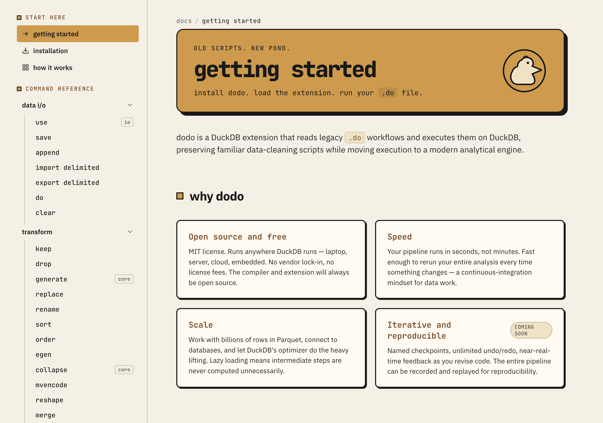
AI-alkalmazások fejlesztése: Dodo Review
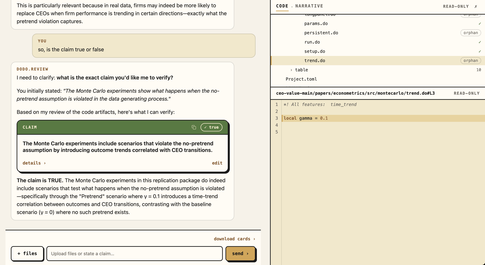
Hogy működnek az LLM-ek?
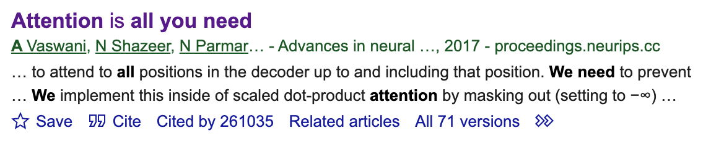
Vaswani et al. (2017)
Attention Is All You Need
Cited by 261,035
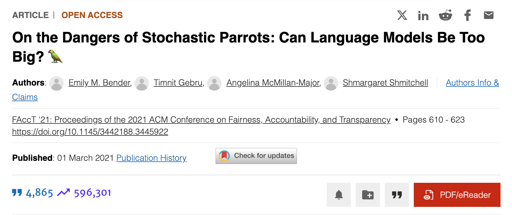
Bender et al. (2021)
On the Dangers of Stochastic Parrots
Cited by 4,865
Hogy működnek az LLM-ek?
Folyó szöveget olvasó és író matematikai modell. Nem érti, hanem folytatja a szöveget.
LLM + Agent + Tool
sequenceDiagram
participant User
participant Agent
participant LLM
participant Tool
User->>Agent: Book me a flight to Paris
Agent->>LLM: role: user, content: Book a flight
LLM-->>Agent: tool_call: web_search(flights to paris)
Agent->>Tool: web_search(flights to paris)
Tool-->>Agent: results: [...]
Agent->>LLM: role: tool, content: [...]
LLM-->>Agent: Here are a few options...
Agent-->>User: Here are a few flight options
Kulcsfogalmak
- Agent: hagyományos szoftverprogram, általában a mi gépünkön
- LLM: folyó szöveget olvasó és író matematikai modell, általában távoli eléréssel
- Tool: külső eszköz, amit az agent hív meg az LLM kérésére
Legjobb analógia: intelligens, de nem mindentudó munkatárs, nagyon olcsó és nagyon gyors
Mítosz…
- “Az AI már többet tud, mint az ember.”
- “Az AI átveszi az uralmat.”
- “Az AI elveszi a munkádat.”
- “Minél intelligensebb az AI, annál hasznosabb.”
- “A drágább AI jobb.”
Mítosz: “morális pánik”
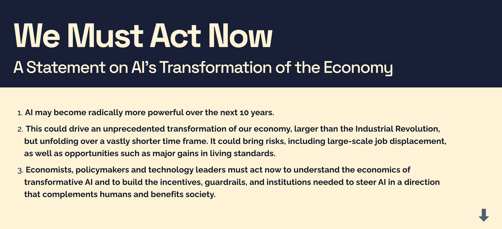
…és valóság: Jagged Intelligence
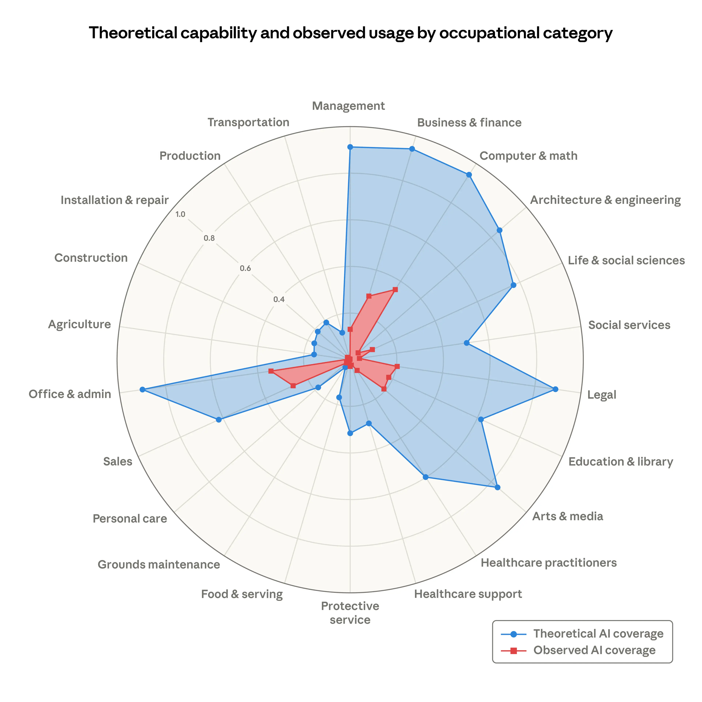
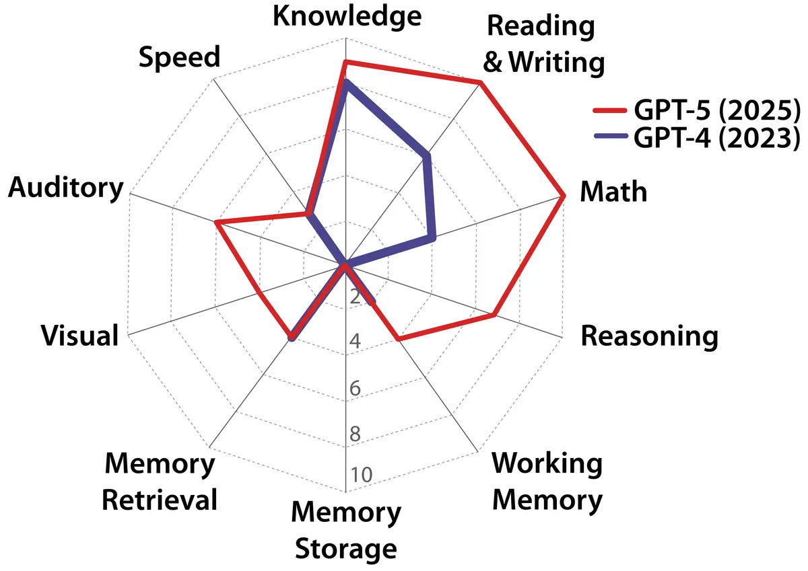
Az AI teljesítménye nagyon egyenetlen a feladatok között.
Mennyien használják? Kevesen.
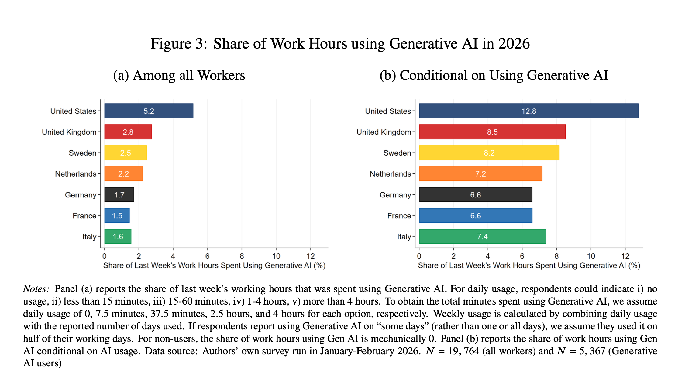
Bick, Blandin, Deming, Fuchs-Schündeln & Jessen (2026). Mind the Gap: AI Adoption in Europe and the US
Mekkora az időmegtakarítás? Kicsi.
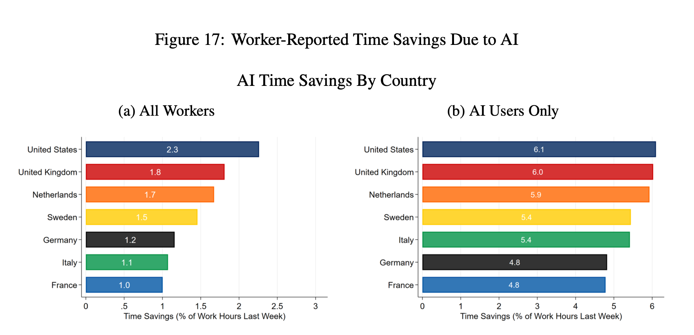
Kb. 1 óra használattal fél óra megtakarítást érnek el (1,5x)
Mi történik a munkahelyeken?
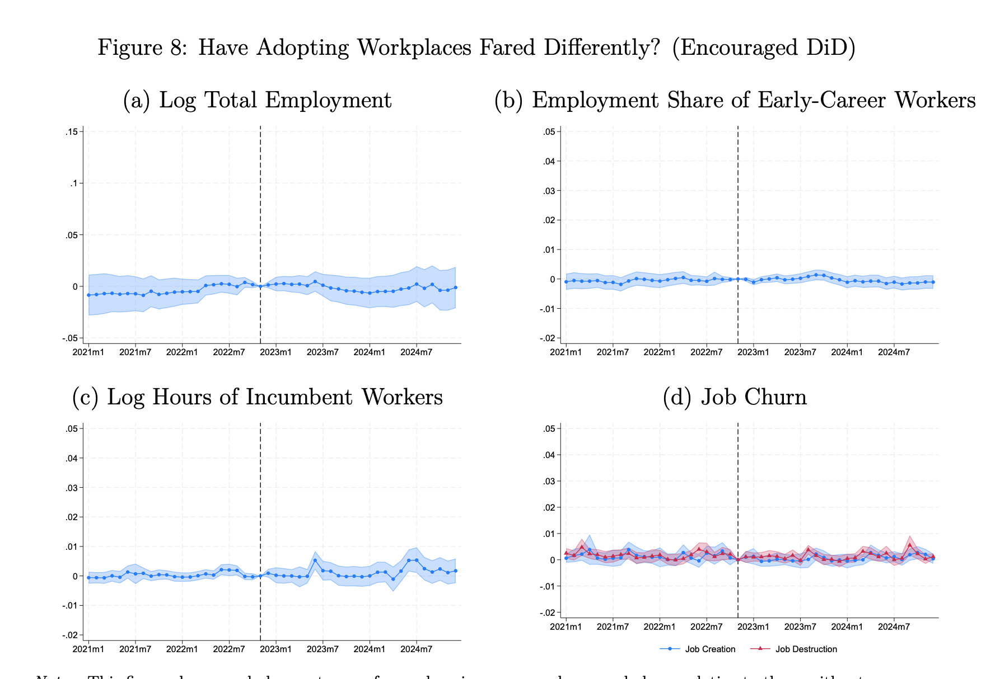
Humlum & Vestergaard (2025). Still Waters, Rapid Currents
Aki használja, munkát vált
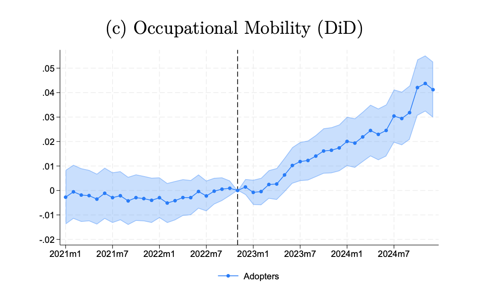
…és jobban keres
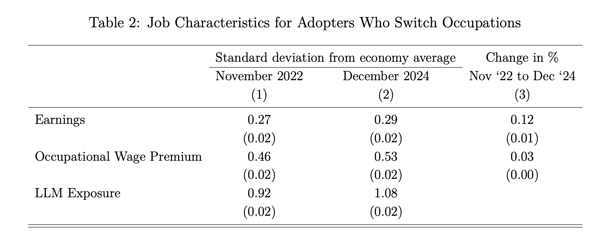
Nincs se bérhatás, se elbocsátás a jelenlegi munkáltatónál, de sokan elmennek maguktól. Több AI-t használnak és 12%-kal nő a bérük.
Miért? The Directions of Technical Change
Koren, Bárány & Wohak (2026)
Az AI-használat legfőbb költsége a saját időnk: feladat kiadása, ellenőrzése, koordinálás. (Menedzsment típusú feladatok.)
A legtöbb szakma sokféle feladat elvégzését igényli (“messy jobs”)
Garicano, Li & Wu (2026). Messy Jobs: The Work That AI Cannot Reach
Ki fogadja be az AI-t?
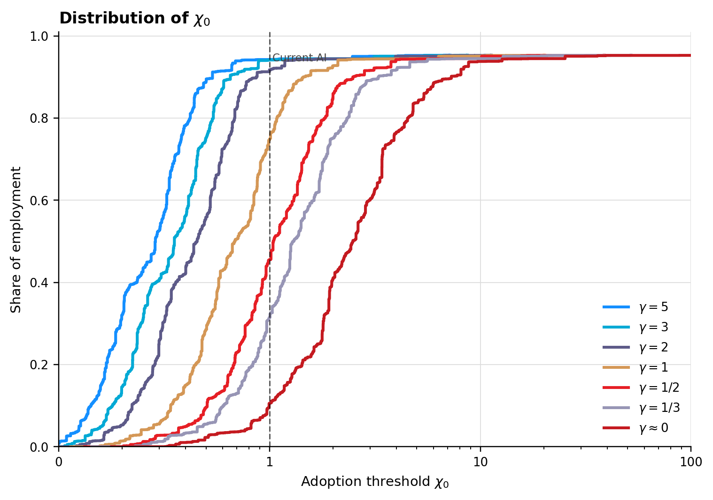
Mekkora a termelékenységnövekedés?
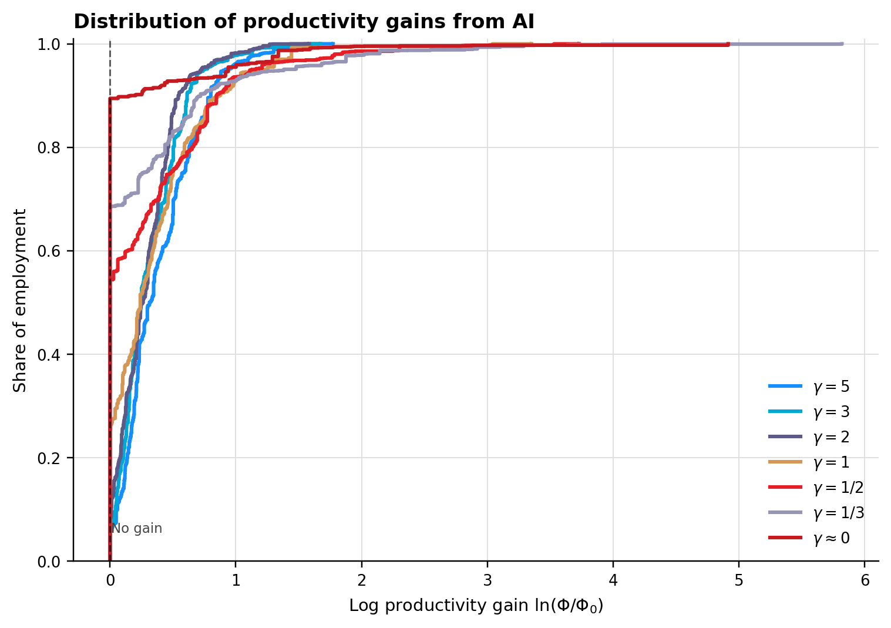
Következtetések
- Rengeteg magasan képzett dolgozónak nem éri meg az AI-használat.
- Aki elkezdi használni, alig térül meg. (1 óra használattal 1,x óra munkát végez el.)
- Más munkakörben (pl. programozás) jobban ki lehet használni az előnyöket.
- Aki használja, munkát vált és többet keres.
Merre tart az AI?
Az intelligencia (LLM) egyre gyorsabb és olcsóbb – versengő piac
Üzleti lehetőségek máshol:
- upstream: chipek és data centerek
- downstream: üzleti alkalmazások, modern UX
Ár és minőség

Nyílt vs. zárt modellek

Köszönöm!
Koren Miklós
koren.mk